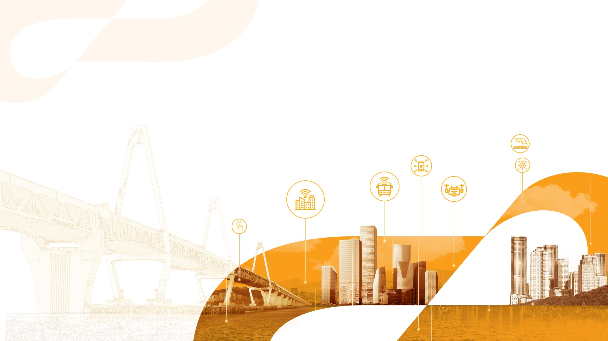
KSCE 2026 CONVENTION · 2026. 10. 23.
기계학습과 분자동역학을 이용한
목표 물성 아스팔트 바인더 조성의 AI 기반 역설계
자동 MD 계산 4,020건 · 벌크 · 층상 인장 · 샌드위치 전단
발표자윤태영 연구위원
소속한국건설기술연구원 도로교통연구본부
연락처tyun@kict.re.kr


실험과 계산에 같은 신뢰성 기준 적용
시험 규모가 커질수록 조건 통제 · 반복이 줄어 신뢰도 낮아짐 · 실험과 계산 모두 근거 필요
분자 · MD
계산 · 조건 완전 통제
바인더 · DSR
균질 · 얇은 시편
혼합물 · 강도
골재 배열 · 공극 무작위
포장 단면 · 가속 시험
층 · 시공 · 하부 지지
현장 포장
기후 · 교통 · 이력
조건 통제 · 반복 수 ↓
구성 요소 · 변동 요인 ↑
정밀 실험의 신뢰도 ≠ 부재 · 구조물 실험의 신뢰도
①DSR과 혼합물 시험의 신뢰도는 같은가?
DSR: 균질 시편 → 가정 성립 · 재현성 높음
혼합물: 시편마다 골재 배열 다름 → 산포 큼
혼합물: 시편마다 골재 배열 다름 → 산포 큼
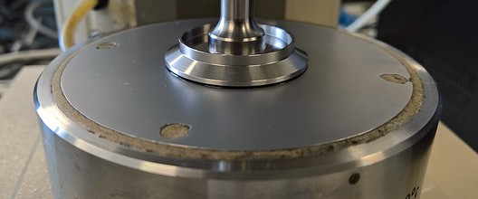
→ 같은 시험값이라도신뢰 근거가 다름
②직접 압축 강도는 포장의 어떤 거동인가?
압축 강도: 균일 응력 가정 위의 재료 지표
포장 거동(시멘트/아스팔트): 휨 · 피로 / 소성변형 · 균열
포장 거동(시멘트/아스팔트): 휨 · 피로 / 소성변형 · 균열
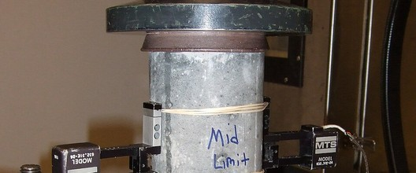
→ 대표성은 이론 가정 ·경험 상관에 의존
③가속 시험의 구간 비교는 같은 조건인가?
표층 · CTB 층 비교: 구간마다 하부 지지 · 시공 다름
구간당 1회 → 재료 효과와 구간 효과가 섞임
구간당 1회 → 재료 효과와 구간 효과가 섞임
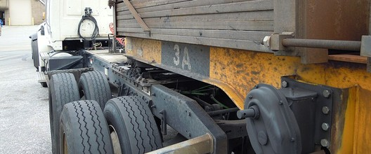
→ 반복 · 대조 없이재료 차이로 단정 불가
근거를 벗어난 실험 → 원인 · 일반화 불가
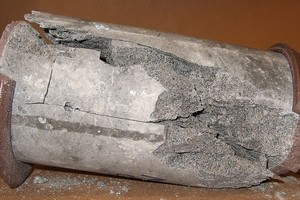
물리적 근거 · 가정이 성립하는 범위 밖
통계적 근거 · 반복 · 대조 부족
통계적 근거 · 반복 · 대조 부족
=
둘 다
신뢰 근거 없음
신뢰 근거 없음
구조화 · 검증 없는 계산 → 실제 현상과 비교 불가
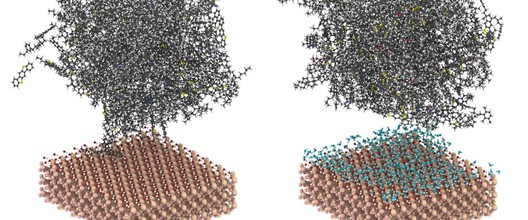
현상 구조화 · 모사 대상 불명확
검증 · 실험 · 이론 대조 없음
검증 · 실험 · 이론 대조 없음
실험과 계산 모두 다음 4가지를 갖춰야 신뢰 가능
✓ 가정 명시✓ 반복✓ 대조✓ 검증
→ 실험 ↔ 계산 상호 검증
사진: Wikimedia Commons · DSR N. Birse (CC BY-SA 4.0) · 압축 · 파괴 시편 Xb-70 (퍼블릭 도메인) · 가속 시험 T. C. Ross (CC BY-SA 3.0) · 분자 모델 = 본 연구
MD의 역할 · 나노미터 이하에서 일어나는 화학적 · 물리적 변화를 이해 → 그 변화가 혼합물 · 포장 구조에 미치는 영향을 분석
02
MD 필요성: 분자 → 부재 → 구조물
구조물 성능 저하의 원인을 분자 수준에서 확인
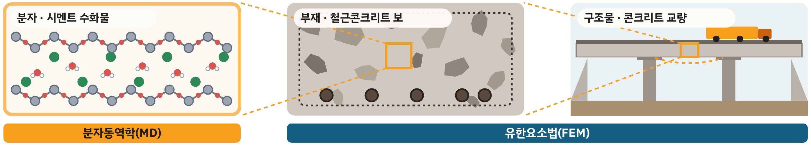
분자 · 시멘트/아스팔트 바인더
부재 · 콘크리트 보/아스팔트 포장층
구조물 · 콘크리트 교량/아스팔트 포장
분자 · 본 연구
MD: 원인 규명
결합 · 수분 · 첨가제 영향을 원자 수준 계산
부재 · 연계 대상
FEM: 부재 성능 계산
MD 결과 → 재료 입력 → 응력 · 균열
구조물 · 연계 대상
구조물 성능 평가
재료 변경 효과 → 안정성 · 수명
사례 · 도로 결빙방지제 (시멘트/아스팔트)
① 염화물 피해
➜표면 박리 · 철근 부식 / 골재–바인더 박리 · 포트홀
② 대응 첨가제
➜공기연행제 · 실리카흄 / 박리방지제(소석회 · 아민계)
③ 새 부작용
강도 저하 · 수축 균열 / 취성 증가 · 효과 감소
➜
부작용 없는 첨가제 탐색 · 반복 실험 대신 분자 계산으로 후보 선별
03
연구 체계: 8단계 자동 계산 Closed loop
목표 입력 뒤 2~8단계 자동 반복 · 계산 결과로 예측 모델 갱신
사진 4: Wikimedia Commons · 极客湾Geekerwan (CC BY 3.0) · 나머지 = 본 연구 계산 결과
04
결과 ① 층상 인장: 물층 · 온도 · 광물
골재 광물 위 바인더를 당기는 계산 · 건조 계면 대 물층 계면
물층이 있을 때 강도 변화
결론
국내 골재 암종 예
SiO₂화강암 · 규암
Al₂O₃안산암 · 편마암
Fe₂O₃현무암
05
결과 ① 층상 인장: 파괴 위치 3유형
왼쪽 = 판정도(점 1개 = 계산 1건) · 오른쪽 = 같은 조건(20 °C · 느린 하중 · 비노화)의 대표 장면, 빨강 = 드러난 골재
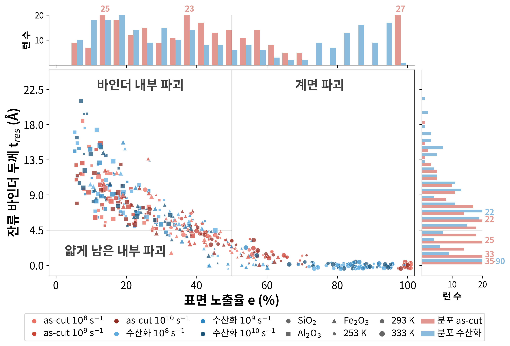
바인더
내부 파괴
내부 파괴
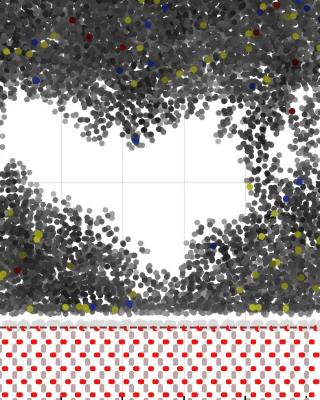
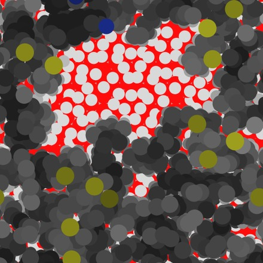
바인더 덮임 79 %
얇게 남은
내부 파괴
내부 파괴
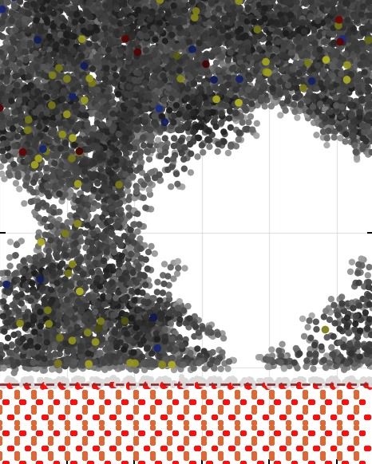
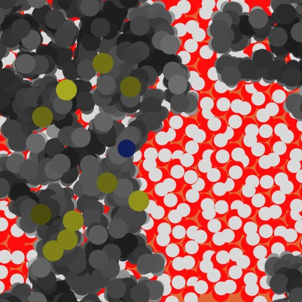
바인더 덮임 58 %
계면 파괴
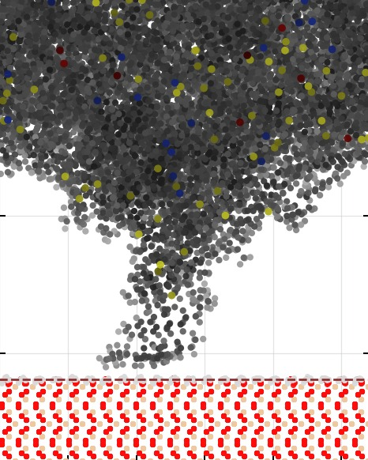
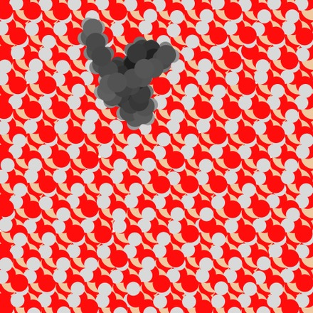
바인더 덮임 5 %
건조 계면계면 39 % · 내부 49 % · 얇게 12 %
물층이 있으면계면 파괴 97 %
06
결과 ② 샌드위치 전단: 속도 · 물 · 광물 · 노화
골재 두 장 사이 바인더를 수평으로 미는 계산 · 속도 · 물 · 광물 · 노화별 전단 강도
전단 강도
결론
ML 연계 · 광물 · 노화 · 속도 · 물 → 전단 강도 예측 모델의 학습 자료
07
결과 종합: 계산 종류별 → 역설계 목표
같은 자동 계산 절차 · 계산 구조만 변경 · 계산 4,020건
| 구조 | 주요 경향 | 역설계 활용 |
|---|---|---|
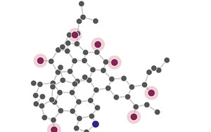 벌크 | 노화 → 밀도 · 응집에너지 증가 | 현행 목표 (완료) |
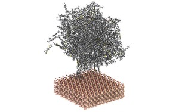 층상 인장 | 물층 → 계면에서 파괴 · 강도 저하 | 다음 목표: 계면 인장강도 |
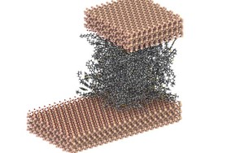 샌드위치 전단 | 미끄럼은 계면에서 · 노화 → 강도 증가 | 다음 목표: 계면 전단강도 |
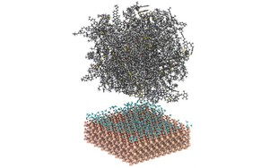 계면 에너지 | 노화 → 물과 더 잘 결합 | 다음 목표: 수분 민감도 |
벌크 물성 → 현행 역설계 · 계면 강도 · 에너지 → 다음 역설계 목표
08
역설계 조건 · 방법
측정 가능한 분자 특성 → 물성 예측 → 다음 계산 자동 선택
입력
설계 변수 = 측정 가능 물리량
- 온도
- 첨가제 밀도 · 종횡비 · 강성
- 산화 정도
온도
→첨가제
→산화 정도
예측
물성 예측 모델
0.98
밀도 일치도
0.97
응집에너지
2.3 %
실측과 차이
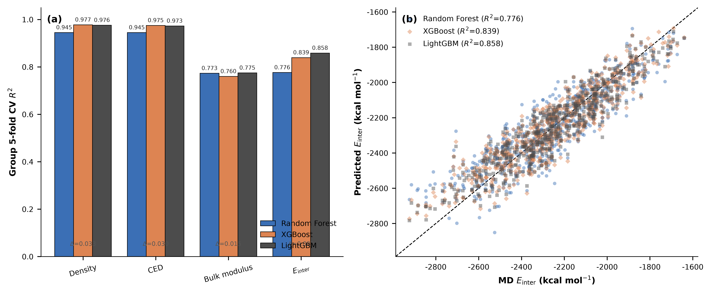
설계
다음 계산 자동 선택
◇ = 예측 개선 기대가 가장 큰 점 → MD 계산 → 모델 갱신
역설계 목표3종→ 다음 쪽 조성 제시
고강성체적탄성률 최대
고응집분자 간 응집 에너지 최대
저밀도 유연밀도 최소
09
역설계 결과: 목표별 최적 조성 3종 + 절충 조성 4종
목표별 최적 조성(★) · 실제 사용 범위를 지키는 절충 조성
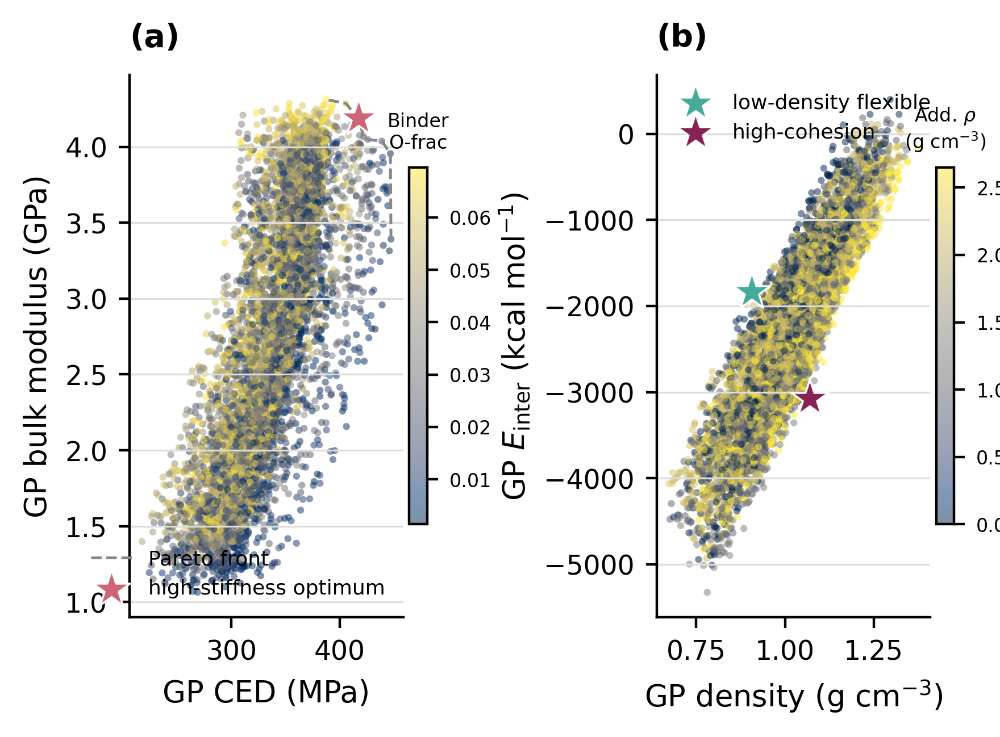
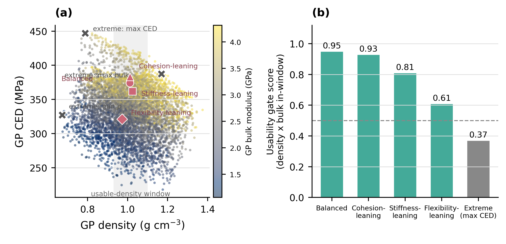
고강성SiO₂ 첨가 · 강한 산화
고응집무첨가 · 중간 산화
저밀도 유연SBS 첨가 · 낮은 산화
한쪽 목표만 극대화한 조성 = 사용 범위 밖 → 사용 범위 안의 절충 조성 4종 제시
10
검증 · 계면 목표 확장
추천 조성 검증 → 벌크 역설계 완료 → 같은 절차에 계면 목표 추가
검증
추천 조성 검증 4단계
- 학습에서 뺀 첨가제로 재확인
- 학습에 없던 온도로 확인
- 문헌 · 실측과 비교
- 실제 사용 범위 확인
실험
↔MD
↔대리모형
➜
현재 · 완료
벌크 역설계
- 목표: 밀도 · 강성 · 응집
- 조성 제안 3종 + 절충 4종
학습 자료
→GP + EI
→추천 조성
➜
확장 · 진행 중
계면 역설계
- 목표: 계면 인장 · 전단강도 · 수분 민감도
- 학습 자료: 계면 1,470건
층상
→샌드위치
→수분
현장 박리계면 인장강도
수분 손상계면 물 · 에너지 수지
밀림계면 전단강도
11
향후 연구: 자율실험실 구성
계산 Closed loop에 로봇 실험 · 분석 장비 추가 · 실험 결과로 예측 모델 재학습
12
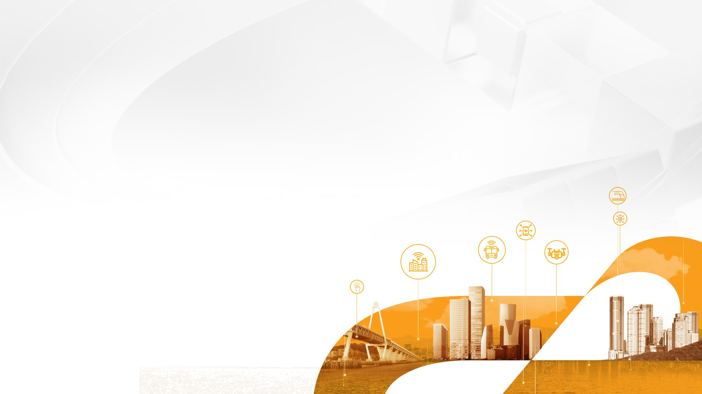
감사합니다
질의응답
tyun@kict.re.kr
과학기술정보통신부 재원 한국건설기술연구원 주요사업(과제번호 20260120–001) 지원
13
1 / 16
0:00 / 0:15